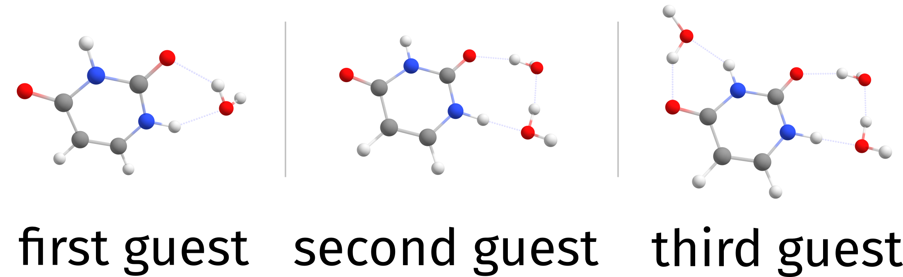
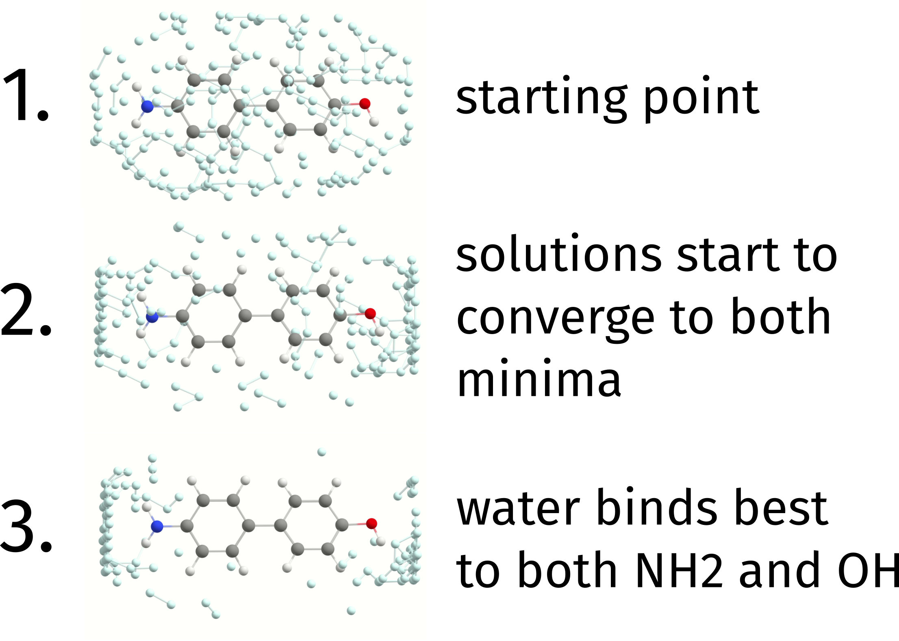

DOCKER：自动化对接算法（Automated Docking Algorithm）¶
化学/物理中最重要的方面并不发生在单个分子上，而是发生在它们相互作用时。那么，给定任意两个分子，如何把它们放在一起形成最佳相互作用的"姿态（pose）"？这正是我们使用 ORCA DOCKER 时试图回答的问题。这里的对接（docking）指的是将两个体系放在一起、形成其最佳可能相互作用的过程。
Note
与 ORCA 6.0 相比，ORCA 6.1 上的 DOCKER 在速度和精度方面都有了显著改进。这些变化也会改变结果，但这只是因为它们的结果会更加精确。
示例 1：简单的水二聚体（A Simple Water Dimer）¶
让我们从一个非常简单的例子开始。给定两个水分子，如何找到最优的二聚体？用 DOCKER 很简单，可以这样完成：
3 structure (0 1) O -2.13487 2.63905 -0.01809 H -1.16698 2.61938 0.02397 H -2.41372 2.24598 0.82256
!XTB %DOCKER GUEST "water.xyz" END * xyz 0 1 O -2.13487 2.63905 -0.01809 H -1.16698 2.61938 0.02397 H -2.41372 2.24598 0.82256 *
其中文件 water.xyz 是一个 .xyz 文件，包含同样的水结构，也可以（按此顺序）在注释行（默认是第二行）给出电荷和多重度：
3 0 1 O -2.13487 2.63905 -0.01809 H -1.16698 2.61938 0.02397 H -2.41372 2.24598 0.82256
在常规 ORCA 输入中给出的分子将是 HOST（主体），而 GUEST（客体）总是通过外部文件给出。
输出开头为：
***************
* ORCA Docker *
***************
Reading guests from file water.xyz
Number of structures read from file 1
Charge and multiplicity of guest from file
Docking approach independent
Docking level normal
Optimizing host .... -5.070544 Eh
Optimizing guest .... -5.070544 Eh
其中写出了含 GUEST 结构的文件名、读取的结构数、一些额外信息，并对主体和客体进行优化（本例中它们相同），这里默认使用 GFN2-XTB。
Note
如果未给定多重度或电荷，则假定 GUEST 为中性闭壳层。
Note
目前 DOCKER 仅适用于 GFN-XTB 和 GFN-FF 方法以及 ALPB 溶剂化模型。将来会扩展到其他方法。
接下来是一些额外信息，在其专门的详细章节中有更详细的解释（见 structurereactivity.docker）：
Starting Docker
---------------
Guest structure .... structure number 1
Guest charge and multiplicity .... (0 , 1)
Final charge and multiplicity .... (0 , 1)
PES used for swarm intelligence .... GFN2-XTB
Setting random seed .... done
Creating spatial grid
Grid Max Dimension 5.50 Angs
Angular Grid Step 32.73 degrees
Cartesian Grid Step 0.50 Angs
Points per Dimension 11 points
Initializing workers
Population Density 0.50 worker/Ang^2
Population Size 57
Swarm intelligence search
Minimization Algorithm mutant particle swarm
Min, Max Iterations (3 , 10)
接下来是对接过程本身，它在几次迭代后停止：
Iter Emin avDE stdDE Time
(Eh) (kcal/mol) (kcal/mol) (min)
-------------------------------------------------------
1 -10.147462 2.756033 1.821981 0.03
2 -10.147462 2.121389 1.610208 0.03
3 -10.148583 2.313606 1.365227 0.03
4 -10.148583 1.846998 1.188680 0.02
5 -10.148583 1.587332 1.168207 0.02
No new minimum found after 3 (MinIter) steps.
这里的想法是收集尽可能多的局域极小值，即为不同结构之间所有可能的相互作用模式收集第一手猜测。我们通过允许两个结构都部分优化来实现这一点，但需要说明的是，我们在这里不会寻找主体和客体的多个构象。
收集到所有解后，我们取其中的一部分做最终的完全优化：
Running final optimization
Maximum number of structures 7
Minimum energy difference 0.10 kcal/mol
Maximum RMSD 0.25 Angs
Optimization strategy regular
Coordinate system redundant 2022
Fixed host false
Struc Eopt Interaction Energy Time
(Eh) (kcal/mol) (min)
------------------------------------------------
1 -10.149006 -4.968378 0.01
2 -10.149005 -4.967965 0.01
3 -10.149007 -4.968825 0.01
4 -10.149007 -4.968641 0.01
5 -10.149007 -4.968743 0.01
6 -10.149006 -4.968116 0.01
7 -10.149007 -4.968678 0.01
如你所见，我们还自动打印 Interaction Energy（相互作用能），它简单地就是最终复合物、主体和客体之间的能量差。相互作用能最低的最终最佳结构随后保存在 Basename.docker.xyz 文件中。如有需要，所有其他结构保存在 Basename.docker.struc1.all.optimized.xyz 中，正如输出所写：
All optimized structures saved to : Basename.docker.struc1.all.optimized.xyz
-------------------------------------
LOWEST INTERACTION ENERGY: -4.968825 kcal/mol (structure 3)
-------------------------------------
(...)
The lowest energy structure was 1, with energy -10.149007.
Docked structures saved to Basename.docker.xyz
Note
名称 Basename.docker.struc1.all.optimized.xyz 中的 struc1 是因为那是第一个被对接的客体。之后可以对接多个客体，这只是组织输出的一种方式。
一切就绪，输出可以可视化，其结果正如预期：

用 GFN2-XTB PES 找到的最终水二聚体。
示例 2：尿嘧啶二聚体（A Uracil Dimer）¶
现在看一个稍微复杂些的例子，尿嘧啶（uracil）二聚体：
12 structure (0 1) N -0.2707028 0.7632994 1.0276159 H -0.5957915 1.3097757 1.8163465 C -0.3386212 1.3810817 -0.2276640 O -0.7270425 2.5346295 -0.3329857 N 0.3638189 -1.2896563 0.1949192 H 0.0796815 0.9143946 -2.3190044 C 0.3781329 -0.7736192 -1.0714063 H 0.6499130 -1.4675080 -1.8526542 C 0.0669084 0.5154897 -1.3194961 H 0.4818502 -2.2779688 0.3498201 C -0.0016589 -0.5616540 1.3117092 O -0.0864879 -1.0482643 2.4227999
! XTB PAL16 %DOCKER GUEST "uracil.xyz" END *xyz 0 1 N -0.2707028 0.7632994 1.0276159 H -0.5957915 1.3097757 1.8163465 C -0.3386212 1.3810817 -0.2276640 O -0.7270425 2.5346295 -0.3329857 N 0.3638189 -1.2896563 0.1949192 H 0.0796815 0.9143946 -2.3190044 C 0.3781329 -0.7736192 -1.0714063 H 0.6499130 -1.4675080 -1.8526542 C 0.0669084 0.5154897 -1.3194961 H 0.4818502 -2.2779688 0.3498201 C -0.0016589 -0.5616540 1.3117092 O -0.0864879 -1.0482643 2.4227999 *
其中 uracil.xyz 就是该结构的简单重复，与之前的水一样。
在这种情况下，输出更加多样化，事实上许多不同的姿态作为最终优化的候选出现：
Struc Eopt Interaction Energy Time
(Eh) (kcal/mol) (min)
------------------------------------------------
1 -49.248577 -11.723457 0.08
2 -49.250442 -12.893758 0.08
3 -49.245624 -9.870339 0.03
4 -49.252991 -14.493130 0.06
5 -49.248470 -11.656256 0.05
6 -49.259335 -18.474228 0.05
7 -49.259269 -18.432902 0.08
8 -49.254913 -15.699019 0.03
9 -49.254927 -15.708244 0.03
10 -49.241672 -7.390198 0.02
11 -49.246534 -10.441269 0.03
发现 6 号结构是相互作用能最低的：
-------------------------------------
LOWEST INTERACTION ENERGY: -18.474228 kcal/mol (structure 6)
-------------------------------------
这里给出所找到结构及其相对能量的示意图：

DOCKER 生成的尿嘧啶二聚体结构（已去除重复），相对能量单位为 kcal/mol。
Note
最终优化之后可能会有重复的结果，目前不会自动去除。这里是手动去除的。
Warning
PAL16 标志意味着 XTB 将并行运行，但 ORCA DOCKER 可以通过对 worker 并行化来实现高效得多的并行。这将在未来版本中完成，效率将显著提高。
示例 3：添加多个客体副本（Adding Multiple Copies of a Guest）¶
假设你想添加同一客体的多个副本，例如在尿嘧啶上依次添加三个水分子。可以简单地这样做：
12 structure (0 1) N -0.2707028 0.7632994 1.0276159 H -0.5957915 1.3097757 1.8163465 C -0.3386212 1.3810817 -0.2276640 O -0.7270425 2.5346295 -0.3329857 N 0.3638189 -1.2896563 0.1949192 H 0.0796815 0.9143946 -2.3190044 C 0.3781329 -0.7736192 -1.0714063 H 0.6499130 -1.4675080 -1.8526542 C 0.0669084 0.5154897 -1.3194961 H 0.4818502 -2.2779688 0.3498201 C -0.0016589 -0.5616540 1.3117092 O -0.0864879 -1.0482643 2.4227999
! XTB PAL16
%DOCKER
GUEST "water.xyz"
NREPEATGUEST 3
END
*xyz 0 1
N -0.2707028 0.7632994 1.0276159
H -0.5957915 1.3097757 1.8163465
C -0.3386212 1.3810817 -0.2276640
O -0.7270425 2.5346295 -0.3329857
N 0.3638189 -1.2896563 0.1949192
H 0.0796815 0.9143946 -2.3190044
C 0.3781329 -0.7736192 -1.0714063
H 0.6499130 -1.4675080 -1.8526542
C 0.0669084 0.5154897 -1.3194961
H 0.4818502 -2.2779688 0.3498201
C -0.0016589 -0.5616540 1.3117092
O -0.0864879 -1.0482643 2.4227999
*
water.xyz 中的客体将依次被添加到之前最佳复合物之上共三次。现在会有名为 Basename.docker.struc1.all.optimized.xyz、Basename.docker.struc2.all.optimized.xyz 和 Basename.docker.struc3.all.optimized.xyz 的文件，每一步一个。同时，同样的最终 Basename.docker.xyz 文件以及一个新的 Basename.docker.build.xyz 也会被打印，其中含每次迭代后的最佳结果。
这就是结果的样子，取自 Basename.docker.xyz：

三个客体的累积对接
Note
默认情况下 HOST 总是被优化。可通过 %DOCKER FIXHOST TRUE END 改变。
示例 4：寻找最佳客体（Find the Best Guest）¶
另一个常见情形是：给定一列客体——或同一客体的构象（见 structurereactivity.GOAT）——人们可能想知道什么是"最佳客体"，即相互作用能最低的那一个。
为此，只需传入一个多结构 xyz 文件，DOCKER 就会尝试依次对接其中的所有结构：
12 structure (0 1) N -0.2707028 0.7632994 1.0276159 H -0.5957915 1.3097757 1.8163465 C -0.3386212 1.3810817 -0.2276640 O -0.7270425 2.5346295 -0.3329857 N 0.3638189 -1.2896563 0.1949192 H 0.0796815 0.9143946 -2.3190044 C 0.3781329 -0.7736192 -1.0714063 H 0.6499130 -1.4675080 -1.8526542 C 0.0669084 0.5154897 -1.3194961 H 0.4818502 -2.2779688 0.3498201 C -0.0016589 -0.5616540 1.3117092 O -0.0864879 -1.0482643 2.4227999
! XTB %DOCKER GUEST "uracil_water.xyz" END *xyz 0 1 N -0.2707028 0.7632994 1.0276159 H -0.5957915 1.3097757 1.8163465 C -0.3386212 1.3810817 -0.2276640 O -0.7270425 2.5346295 -0.3329857 N 0.3638189 -1.2896563 0.1949192 H 0.0796815 0.9143946 -2.3190044 C 0.3781329 -0.7736192 -1.0714063 H 0.6499130 -1.4675080 -1.8526542 C 0.0669084 0.5154897 -1.3194961 H 0.4818502 -2.2779688 0.3498201 C -0.0016589 -0.5616540 1.3117092 O -0.0864879 -1.0482643 2.4227999 *
这里文件 uracil_water.xyz 看起来如下：
15 0 1 O -2.13487 2.63905 -0.01809 H -1.16698 2.61938 0.02397 H -2.41372 2.24598 0.82256 N -0.2707028 0.7632994 1.0276159 H -0.5957915 1.3097757 1.8163465 C -0.3386212 1.3810817 -0.2276640 O -0.7270425 2.5346295 -0.3329857 N 0.3638189 -1.2896563 0.1949192 H 0.0796815 0.9143946 -2.3190044 C 0.3781329 -0.7736192 -1.0714063 H 0.6499130 -1.4675080 -1.8526542 C 0.0669084 0.5154897 -1.3194961 H 0.4818502 -2.2779688 0.3498201 C -0.0016589 -0.5616540 1.3117092 O -0.0864879 -1.0482643 2.4227999
是一个水分子后跟一个尿嘧啶分子。首先添加水，然后是尿嘧啶，但两者是分别进行的。初始输出略有不同：
***************
* ORCA Docker *
***************
Reading guests from file uracil_water.xyz
Number of structures read from file 2
Charge and multiplicity of guests from file
Docking approach independent
Docking level normal
现在从文件中读取了两个结构，Docking approach 标记为 independent（独立），意味着每个结构都将独立于彼此进行对接。
全部完成后，输出为：
-------------------------------------
LOWEST INTERACTION ENERGY: -18.482854 kcal/mol (structure 6)
-------------------------------------
Total time for docking: 4.84 minutes
The lowest energy structure was 2, with energy -49.259349.
Docked structures saved to Basename.docker.xyz
可以看到最低的相互作用能是结构 2（尿嘧啶）的，意味着它与 HOST 的相互作用比所给的水分子更强。现在文件 Basename.docker.xyz 将包含按相互作用能排序的全部最终结构。

将水和尿嘧啶独立对接到一个尿嘧啶分子上
Note
默认情况下，对接方法使用固定的随机种子，在同一台机器上应始终给出相同结果。要使其总是完全随机，请添加 %DOCKER RANDOMSEED TRUE END
Note
要使用更快的 GFN-FF 而非 GFN2-XTB，请用 !DOCK(GFNFF)。要进行更快（但精度较低）的对接，请用 !QUICKDOCK。
Note
要尝试 GUEST 的多个构象，可以直接在此处给出 GOAT 打印的系综文件 Basename.finalensemble.xyz，整个系综将针对给定的 HOST 进行测试。
其他选项的详细总结见 docker.keywords。
基本理论（Underlying theory）¶
DOCKER 背后的基本思想是使用一种群体智能（swarm intelligence）shami_particle_2022，基于给定势能面（PES）的能量和梯度，寻找 HOST 最佳定位的局域极小值。
群体智能算法的发明是为了模仿蜜蜂、蚂蚁等动物的行为，而它实际上非常适合这里的问题（如下所示）。该算法所需的基本步骤为：
- 优化
HOST和GUEST； - 在
HOST周围创建空间格点； - 初始化一组可能的随机解；
- 让群体智能寻找局域极小值；
- 用 GFN-FF 对大量这些极小值进行预优化；
- 收集第 4 步中找到的最佳解中的一部分并进行完全优化；
- 能量最低的结构被视为最佳解。
为快速演示初始解集如何"演化"以找到不同的局域极小值，以下面取代联苯作为 HOST 为例。下图展示了一个水分子（GUEST）如何被对接到初始 HOST 上。
每个灰球代表水分子的一种可能放置位置（这里忽略其旋转角）。开始时，它们都无偏地分布在 HOST 上。随着迭代进行，算法开始发现分子两侧比芳香环具有更低能量的解（正如预期），可能的解开始收敛到那些点。
最终，取包含水分子结合在两侧的解，然后对体系进行完全优化，人们发现最佳结合发生在右侧的羟基上。

水分子在取代联苯上的对接过程。
Warning
目前 DOCKER 只能与快速的 GFN-XTB 方法一起使用，将来会推广。它也尚未充分挖掘并行化的潜力，未来版本中可以快得多。
深入了解输出（Looking Deeper into the Output）¶
与格点和群体优化相关的细节可以在输出中找到，这里是从前面章节的水二聚体例子中取的一个例子：
Creating spatial grid
Grid Max Dimension 5.50 Angs
Angular Grid Step 32.73 degrees
Cartesian Grid Step 0.50 Angs
Points per Dimension 11 points
Initializing workers
Population Density 0.50 worker/Ang^2
Population Size 57
Swarm intelligence search
Minimization Algorithm mutant particle swarm
Min, Max Iterations (3 , 10)
这里的 Population Density（种群密度）定义在 HOST 周围的初始格点上放置多少解，可通过 %DOCKER SWARMPOPDENSITY 0.50 END 控制，而种群大小是其直接结果，除非用 %DOCKER 下的 SWARMPOPSIZE 指定。
另一条重要信息是 Min, Max Iterations（最小、最大迭代数），它们定义检查收敛前的最少迭代次数和最大可能迭代次数。可通过在 %DOCKER 下设置 SWARMMINITER 和 SWARMMAXITER 来更改。
然后在群体搜索本身期间（这里称为"演化步（evolution step）"），HOST 和 GUEST 使用与 !SLOPPYOPT 相同的判据进行部分优化，并取其收敛时的能量作为收敛判据。仍以之前的例子为例，打印如下：
Note
所有优化都遵守 %GEOM 块中给出的约束和/或势。HOST 可以很容易地用 %DOCKER FIXHOST TRUE END 冻结。
Iter Emin avDE stdDE Time
(Eh) (kcal/mol) (kcal/mol) (min)
-------------------------------------------------------
1 -10.147462 2.756033 1.821981 0.03
2 -10.147462 2.121389 1.610208 0.03
3 -10.148583 2.313606 1.365227 0.03
4 -10.148583 1.846998 1.188680 0.02
5 -10.148583 1.587332 1.168207 0.02
No new minimum found after 3 (SwarmMinIter) steps.
这里给出迭代次数、过程中找到的最佳解的能量、与最低解的平均能量差及其标准差。第一个数字显示体系是否正向更低能量的解演化，后两个则给出所找到能量"分散程度"的概念。
如果在 SWARMMINITER 次迭代内没有找到新的极小值，则认为算法已收敛，最佳解被取入最终优化步。
最终步骤（The final steps）¶
演化步之后，从解集中取共 \(max(sqrt(SwarmPopSize),5)\) 个结构进行最终的完全优化。输出如下：
Running final optimization
Maximum number of structures 7
Minimum energy difference 0.10 kcal/mol
Maximum RMSD 0.25 Angs
Optimization strategy regular
Coordinate system redundant 2022
Fixed host false
Minimum energy difference 且 Maximum RMSD（在用四元数方法进行最优旋转后获得）之内的结构。如果总原子数超过 300，坐标系也会自动设为笛卡尔坐标。设置 AUTOCOORDSYS FALSE 可避免这一点，或用 %GEOM COORDSYS CARTESIAN END 在对接过程中全程使用笛卡尔坐标。
如果某些优化在过程中失败，它们会被标记为 optimization failed，如下例所示：
Struc Eopt Interaction Energy Time
(Eh) (kcal/mol) (min)
------------------------------------------------
1 -10.149006 -4.968378 0.01
2 -10.149005 -4.967965 0.01
3 optimization failed 0.01
4 -10.149007 -4.968641 0.01
(...)
这只意味着一些解最终未能完全优化，在打印的文件中它们的能量被设为 1000 Eh，以显示作业未完成。如果你想增加迭代次数或更改最终收敛判据，照常用 %GEOM 块修改即可。
在对接过程中添加键偏置（Adding a bond bias to the docking process）¶
几何优化中可用的键偏置（bond bias）（见 optimization.bondbias 一节）也可用于 DOCKER，但这里的输入略有不同。
由于 DOCKER 从一开始就不知到总原子数，%DOCKER 块需要按此顺序给出 GUEST 和 HOST 的起始原子编号，而不是最终复合物的原子数。
例如，要在对接过程中在 GUEST 的原子 2 与 HOST 的原子 19 之间添加键偏置，请用：
这里使用与 %GEOM 块相同的参数及其默认值。
Note
如果使用 CLUSTERMODE DOCKING（默认），这也会应用于 SOLVATOR。GUEST 原子编号对应于溶剂的编号，如输出中所打印。
Warning
如果从 %DOCKER 块添加偏置，它们将覆盖 %GEOM 块中的任何其他偏置。
定义格点的中心和范围（Defining the center and extent of the grid）¶
如上所述，GUEST 分子的放置借助空间格点完成。默认情况下，格点围绕主体分子的质心构建。然而，若需要格点位于不同位置，可通过设置任意中心和范围来改变。
其中心可简单地用笛卡尔坐标定义：
也可以给出一个原子列表，将取这些原子的质心。若只给出一个原子，它当然就是中心：
Warning
如果给出了 GRIDCENTERATOMS 而 HOST 被优化（这是默认情形），格点中心将仅在几何优化之后定义。对于 GRIDCENTER 选项，中心将固定在所需的笛卡尔坐标处。
围绕该中心的格点范围可由以下方式控制：
所有 x、y 和 z 坐标都将从中心扩展这么多。它必须是一个立方体，所有维度都相同。若未给定范围，将使用默认值。
Note
把格点范围设置到存在原子的区域没有问题。格点将只围绕这些构建，与默认情形相同。
一般提示（General Tips）¶
- 为了快速更改对接过程的 PES，可使用
!DOCK(GFN2-XTB)、!DOCK(GFN1-XTB)、!DOCK(GFN0-XTB)或!DOCK(GFN-FF)。 - 要进行更快但精度较低的对接，也有输入
!QUICKDOCK。 - 有四个级别的"对接"过程，从简单到更精细：
SCREENING、QUICK、NORMAL（默认）和COMPLETE，可写作%DOCK DOCKLEVEL COMPLETE END。 - 要增加最终优化的结构数，只需更改
%DOCKER下的NOPT。 - 如果客体拓扑在对接过程中发生某种变化，该结构将被丢弃。可通过设置
%DOCK CHECKGUESTTOPO FALSE END关闭此行为。
Warning
在 ORCA6.1 发布之时，该算法尚未发表。相关论文正在准备中。
关键词（Keywords）¶
DOCKER 相关简单输入关键词的汇总见 tab:structurereactivity.docker.keywords.simple。所有
%docker 块选项总结见 tab:structurereactivity.docker.keywords.block。
DOCKER 算法的简单输入关键词。
| 关键词 | 说明 |
|---|---|
QUICKDOCK |
设置 DOCKLEVEL QUICK |
NORMALDOCK |
设置 DOCKLEVEL NORMAL |
COMPLETEDOCK |
设置 DOCKLEVEL COMPLETE |
DOCK(GFN-FF) |
设置 EVPES GFNFF |
DOCK(GFN0-XTB) |
设置 EVPES GFN0XTB |
DOCK(GFN1-XTB) |
设置 EVPES GFN1XTB |
DOCK(GFN2-XTB) |
设置 EVPES GFN2XTB |
DOCKER 算法的 %docker 块输入关键词。
| 关键词 | 选项 | 说明 |
|---|---|---|
GUEST |
"filename.xyz" |
一个 .xyz 文件（可以是多结构），客体将从其中读取。可在注释行为每个客体包含不同的电荷和多重度。只有当恰好给出两个整数时才会被读取，否则忽略。 |
DOCKLEVEL |
screening |
定义对接的总体策略。 |
quick |
将改变种群密度、最终优化结构数等。默认为 normal。 |
|
normal |
||
complete |
||
PRINTLEVEL |
low |
|
normal |
默认 | |
high |
将打印许多额外文件！ | |
NREPEATGUEST |
1 |
重复 "GUEST" 文件内容的次数 |
CUMULATIVE |
true |
将 "GUEST" 文件的内容逐一叠加？默认为 false，意味着每个都将独立进行。 |
GUESTCHARGE |
0 |
可用于定义客体的电荷（默认 0） |
GUESTMULT |
3 |
多重度同理（默认 1）。两者也可通过 "filename.xyz" 的注释行给出，见上文。 |
RAMDOMSEED |
true |
是否允许过程真正随机、每次给出不同结果（默认 false） |
FIXHOST |
true |
在所有步骤中冻结 HOST 的坐标？（默认 false） |
OPTLEVEL |
sloppyopt |
在 DOCKER 内部使用默认优化判据 |
looseopt |
||
normalopt |
||
AUTOCOORDSYS |
false |
自动对对接过程使用笛卡尔坐标（默认 false） |
ALLOWMETALCOORD |
true |
将允许 DOCKER 把原子放置在离金属足够近处以形成配位键。默认情况下为 false，此类键只会通过优化形成，优化可以在 DOCKER 内部进行，但并非必然。 |
MBONDFAC |
1.0 |
与金属定义键时半径的乘法因子。默认为 1.0 |
| 格点选项（Grid options）： | ||
GRIDCENTER |
1.00, 0.642, -1.234 |
中心的笛卡尔坐标，单位为 Å |
GRIDCENTERATOMS |
{0:5 7} end |
一个原子列表，将取其质心 |
GRIDEXTENT |
15 |
从中心出发单个维度的范围，单位为 Å |
| 群体智能步（Swarm intelligence step）： | ||
POPDENSITY |
5.0 |
每平方 Å 的种群密度。默认取决于对接级别 |
POPSIZE |
500 |
种群大小的固定数目 |
SWARMMAXITER |
10 |
最大迭代次数 |
SWARMMINITER |
3 |
检查收敛的最少次数，以及标志收敛所需的最少相同步数 |
SWARMPOPDENSITY |
0.5 |
基于 HOST 格点的种群密度 |
SWARMPOPSIZE |
150 |
群体种群大小的固定数目 |
SWARMPES |
cdp |
仅在演化步期间使用哪种 PES。默认的 cdp 比其他的快很多。 |
gfnff |
可以与最终优化不同。 | |
gfn0xtb |
||
gfn1xtb |
||
gfn2xtb |
||
CHECKTOPO |
false |
在对接过程中检查主体和客体的拓扑？默认为 true。 |
| 预优化（Pre optimizations）： | ||
PREOPT |
false |
控制是否进行 PreOpt 步。默认 true。 |
| 最终优化（Final optimizations）： | ||
NOPT |
10 |
要优化的固定结构数目 |
NOOPT |
false |
完全不优化任何结构？（默认 false） |